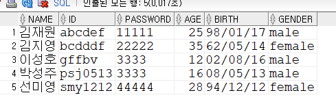
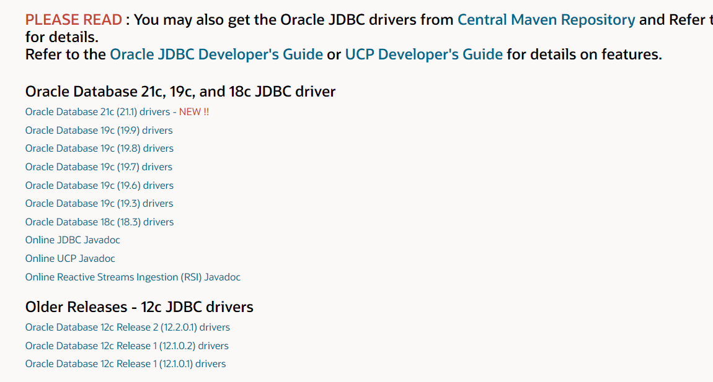
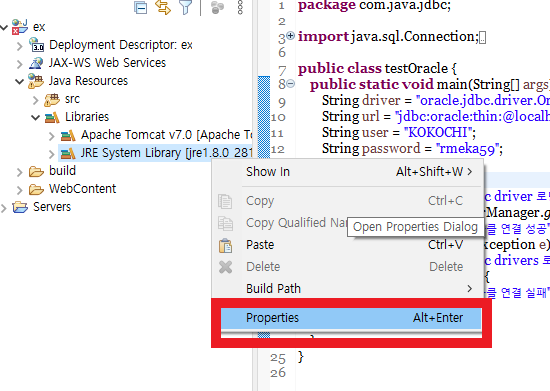
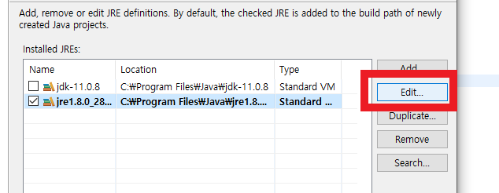
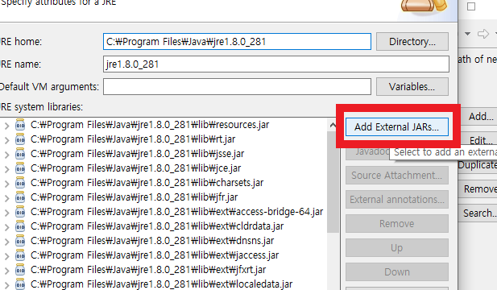
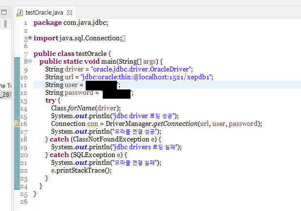
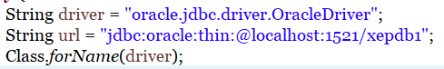
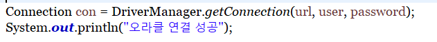
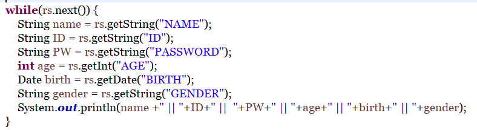
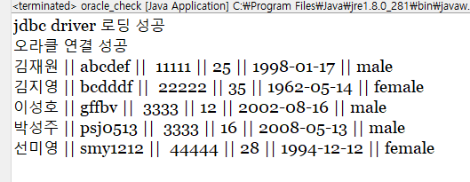

오라클 데이터베이스를 이용한 JDBC 실습을 위하여,
오라클 데이터베이스에서 테이블을 생성합니다.
JSP와 데이터베이스의 정보를 연동하여 사이트에 정보를 표시하기 위한 단계가 됩니다.

위는 완성된 데이터베이스 테이블입니다.
실습을 위하여 몇가지의 로그인 데이터를 준비합니다.

다음으로 jdbc 라이브러리를 다운받습니다.
위 사이트를 통해 ojdbc파일 다운로드를 클릭합니다.

이클립스를 열어서, JRE System Library의 Properties를 클릭합니다.

Edit 버튼을 클릭하여 수정창을 엽니다.

ADD버튼을 통해서 새로운 자바 라이브러리를 추가합니다.

추가가 완료된 후에 위의 코드로 정상적으로 오라클 데이터베이스와 연결되는지 확인합니다.
user와 password값에는 사용자 아이디와 비밀번호를 입력해줍니다.

오라클과 자바 연동을 위해서는 jdbc 드라이버와 연동을 위한 url과,
오라클 연동을 위한 localhost 포트번호와 SID값을 이용하여 연결하여야한다.

Connection 개체에 아이디와 비밀번호와 url값을 넘겨서,
오라클과 연동을 시도합니다. 실패시 try를 통해서 예외로 넘어갑니다.

Statement객체에 sql 쿼리를 위한 문장을 담고,
해당 쿼리를 데이터베이스로 행한 후에, ResultSet 객체에 담습니다.

ResultSet객체에서 하나씩 값을 꺼내며 쿼리문의 결과를 받아옵니다.

실행하여 데이터베이스에 적용한 값들이 제대로 출력되는지 확인합니다.